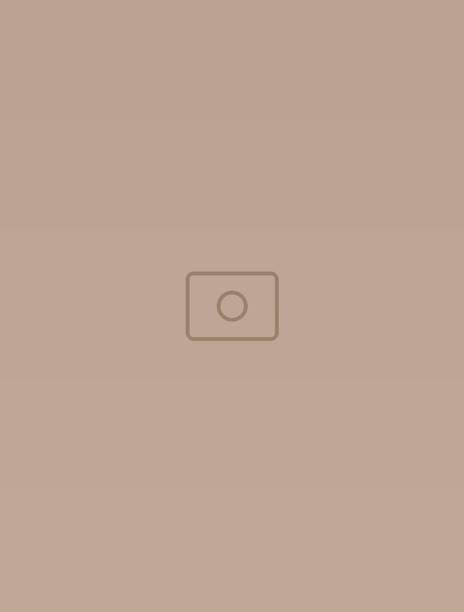
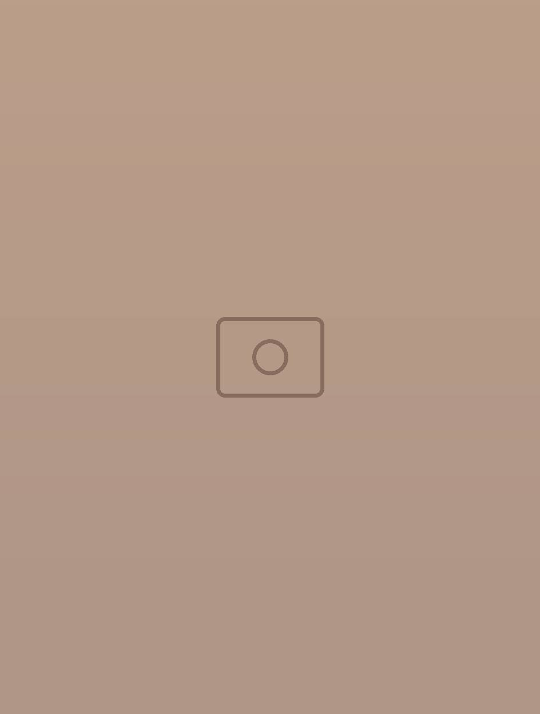
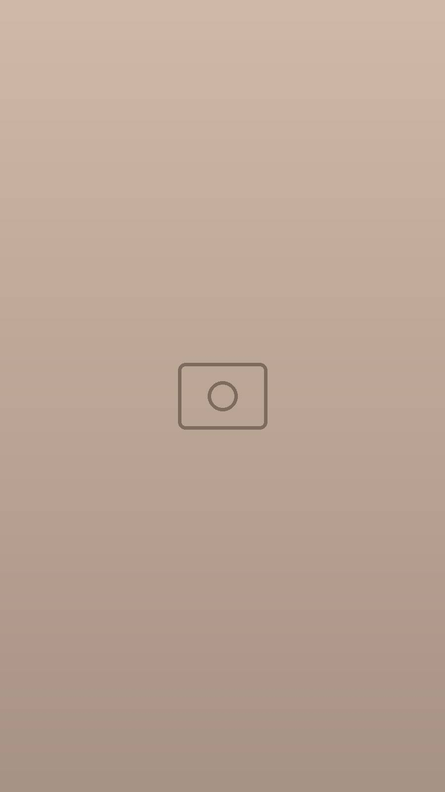
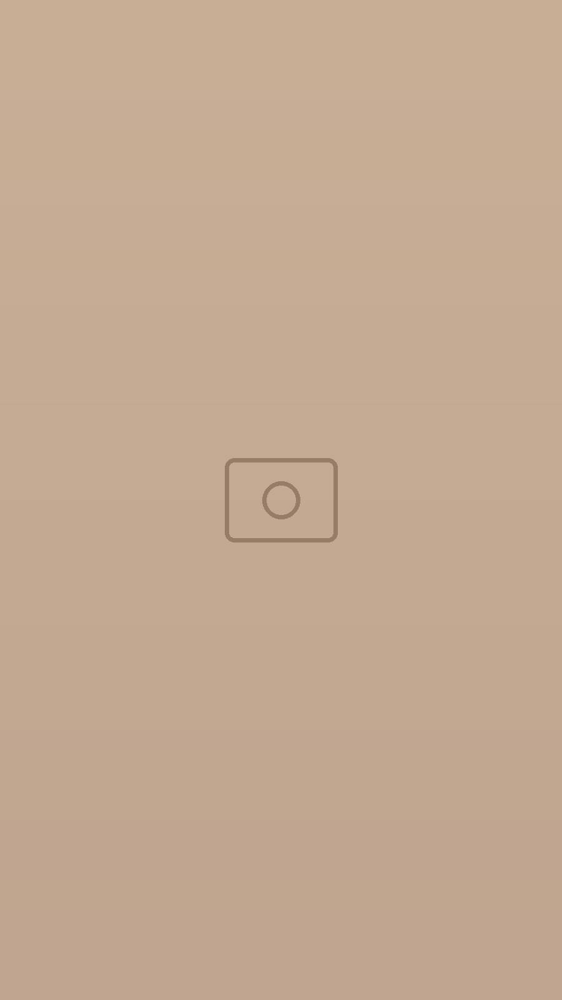
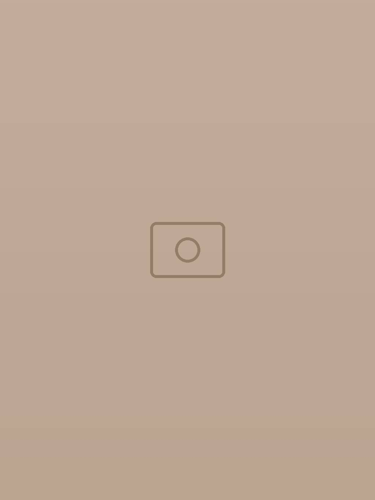

Café · Brunch · Pauses tranquilles
Ivory
Tout le charme de Sidi Bou Saïd, servi à table.
Murs blancs, volets bleus, plein soleil et l’art de prendre son temps : brunch généreux, bon café et lumière dorée, au cœur du village.
Centre du village, Sidi Bou Saïd
La formule à deux
Le Doux Duole brunch qui se partage à deux
Du sucré, du salé, de quoi se régaler… et le prétexte idéal pour un long brunch à deux, sans montre au poignet.
- Deux croissants dorés
- Omelette aux herbes, avocat, fromage frais
- Toasts aux œufs et champignons
- Pancakes crème de pistache & framboises
- Deux cafés
- Deux jus fruités



Le maître des lieux
Voici Caramel, la mascotte
Roux et blanc, l’air important : Caramel surveille la salle depuis les chaises en rotin. Pas question de prendre les commandes… les câlins, en revanche, toujours.
Prendre son temps
Un coin de calme à Sidi Bou Saïd
De la lumière, un bon café et l’ambiance du village, du brunch du matin jusqu’au soir, quand les lampes s’allument. Ici, personne n’est pressé.

Infos pratiques
Bienvenue à l’Ivory, au cœur de Sidi Bou Saïd
- Adresse
- Centre du village, Sidi Bou Saïd
- Réservation
- Par WhatsApp ou au 00 000 000
- Horaires
- Du brunch au soir : demandez-nous par téléphone
- contact@exemple.tn
